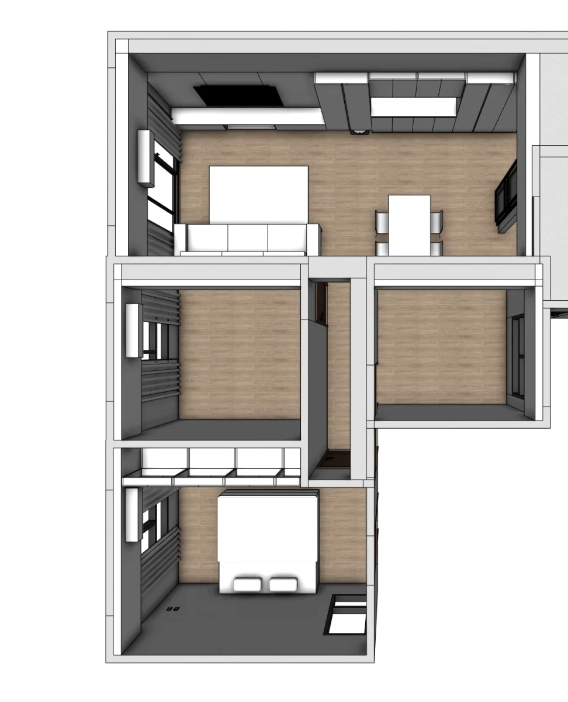
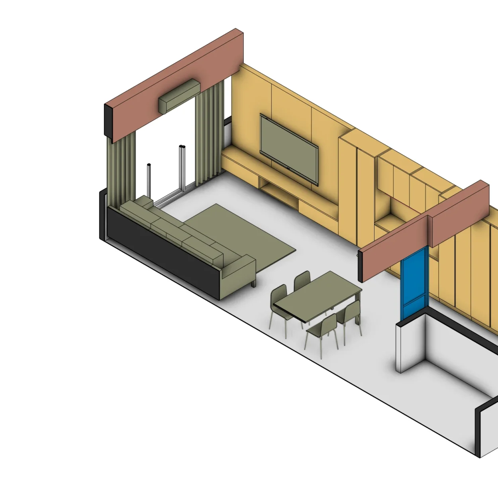

台中大里住宅局部裝修，先確認哪些地方真的需要做
這次案場位於台中大里，工程以住宅局部裝修為主。屋主沒有打算追求複雜造型，也不希望為了看起來「有設計」而把每個房間做滿；真正需要處理的，是玄關、客餐廳、主臥、收納櫃體、天花、水電與既有設備之間的關係。
局部裝修看似比全室翻修單純，但只要有不同工種進場，細節就不能只靠口頭確認。櫃體位置會影響插座、開關與設備散熱，天花需要配合照明和收邊，玄關的分區方式也會同時改變動線與客廳視線。少做不代表少想，而是更需要把預算放在真正會使用的地方。
不是先選風格，而是分清楚「現在一定要做」、「入住後可以調整」與「暫時保留」的項目，讓空間和預算都有清楚的優先順序。
住宅裝修提案以前，先把生活需求整理成配置條件
屋主一開始提出的不是某一種風格，而是幾個非常具體的生活問題。這些資訊比「喜歡什麼顏色」更早影響平面配置：
- 希望視覺保持整齊，多數物品可以收起來，但常用的餐用電器不必每天搬進搬出。
- 插座要跟著使用位置安排，避免入住後才用延長線補救，也要預留電器散熱與維修空間。
- 玄關與客廳需要適度區隔，同時保留公共空間的開闊感與順暢動線。
- 次臥目前不急著做滿，在用途還可能改變時，先保留未來調整的彈性。
需求確認後，配置順序就會自然浮現：優先處理每天使用的玄關與客餐廳；先定位電器、插座和設備條件，再設計櫃體；用途尚未確定的房間，則避免過早投入固定裝修。這也是局部裝修控制預算時最重要的一步。

看不懂平面圖怎麼辦？把裝修範圍變成立體空間提案
平面圖可以交代尺寸與位置，但對第一次裝修的屋主來說，未必能立刻想像櫃體有多高、天花做到哪裡、家具放進去後還剩多少走道。若雙方只看著同一張平面圖，腦中想像的空間仍可能完全不同。
因此玥森把平面配置進一步整理成立體軸測與不同視角，並用色塊區分櫃體、天花、設備、既有結構和保留區域。這套由我們自行發展的提案方式稱為 MoonBlock 空間預演。它不是為了把圖做得華麗，而是讓沒有設計背景的屋主，也能在施工前看懂這次準備改變什麼。

這個階段先確認的是空間骨架：動線是否順暢、收納是否足夠、設備位置是否合理，以及預算要集中在哪些項目。等這些問題有共識後，再往材質、色彩與細部尺寸發展，決策會更穩定。
空間方向確認後，圖面如何接到裝修報價與現場量單
配置與工程範圍確認後，施作內容會依空間和工種整理成報價。屋主不只看到一個總價，而是能逐項核對玄關、客餐廳、主臥、天花、水電與櫃體分別包含哪些內容，也更容易判斷哪些項目應該保留、調整或延後。
同一組已確認的資料，也會轉成工班現場丈量與施工需要的量單。當圖面、屋主報價和工班資料來自相同內容，就能減少重複轉抄造成的遺漏，也避免現場才發現彼此理解不同。
做在哪裡、實際做什麼，以及這個項目如何計價。總價重要，但屋主能不能看懂預算花在哪裡，同樣重要。
簽約後如何掌握施工進度？讓屋主隨時看見案件現況
完成簽約後，屋主會收到專屬的工程進度頁面。這次大里案的屋主第一次看到時有些驚訝，因為原本並不知道，後續可以在同一個地方持續查看施工階段與需要確認的事項。
施工開始後，現場照片、工程進度、選材紀錄與待確認事項都會集中在專案頁面。屋主知道現在做到哪個階段、接下來要處理什麼，也能回頭找到過去已確認的內容。
對住宅裝修來說，進度管理不是單純列出工期。真正重要的是在不同工種進場前，把需要屋主決定的事情提早提出；遇到現場狀況時，也能留下清楚紀錄。資訊集中之後，屋主與設計端都不必各自記著不同版本。
台中住宅局部裝修，也需要一套完整而不繁瑣的流程
局部裝修同樣會遇到工種銜接、尺寸確認、材料選擇、追加減與現場溝通。差別只是項目數量較少，不代表可以省略重要確認。流程的目的也不是增加會議或文件，而是在真正施工以前，把可能造成返工的問題先處理掉。
回頭看這次台中大里住宅案，整個流程可以整理成五個步驟：
- 整理生活需求：確認每天怎麼使用空間，以及這次裝修的優先順序。
- 界定工程範圍：分清楚必要施作、可以調整與暫時保留的項目。
- 確認空間提案：用平面與立體圖理解配置、比例、動線和設備關係。
- 核對報價內容：讓圖面、屋主報價與工班量單對應同一組施作項目。
- 持續管理施工：集中記錄工程進度、現場照片與需要確認的決定。
當屋主、設計端與工班都能回到同一份依據，局部裝修才不會因為看起來規模不大，反而在現場漏掉細節。這也是完整流程真正要解決的問題。
正在規劃台中住宅裝修？先把需求與範圍說清楚
這次大里案沒有用複雜造型堆疊設計，而是把預算集中在屋主每天會使用的地方，並替用途尚未確定的空間保留彈性。該做的提案、報價與施工管理仍然完整，因為工程規模不大，不代表居住需求可以被簡化。
如果你正在規劃台中大里或鄰近地區的新成屋裝修、住宅翻修或局部裝修，可以先準備案場地區、屋況、室內坪數、預計入住時間、預算方向與現有平面圖。我們會先一起確認需求、工程範圍與適合的合作方式。
還在準備前期資料，也可以先閱讀台中第一次裝潢完整流程與新成屋裝潢預算規劃。
LINE 諮詢台中住宅裝修